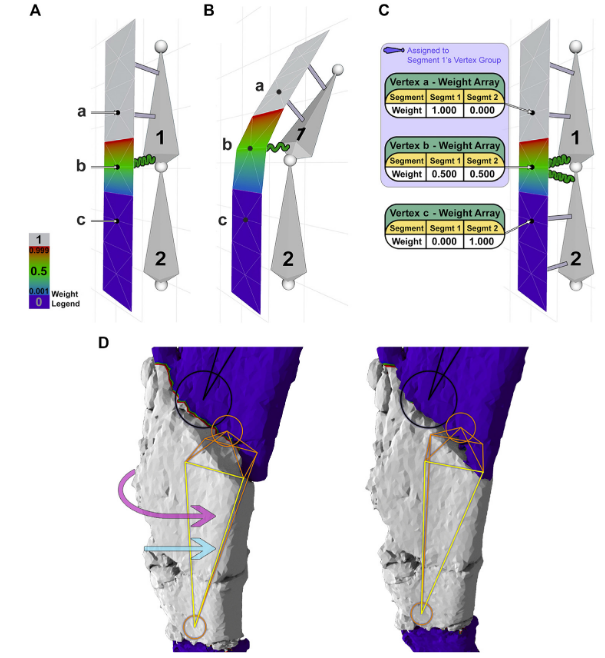
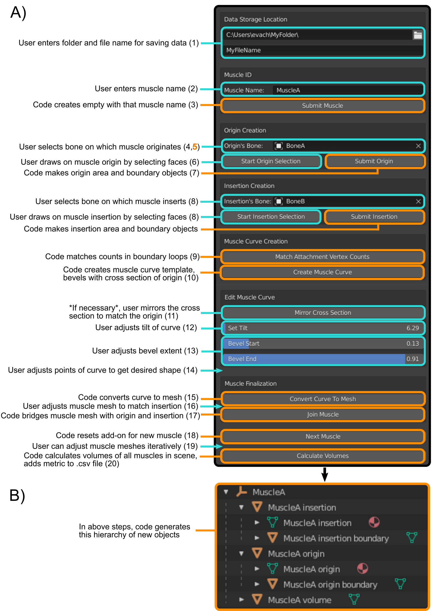
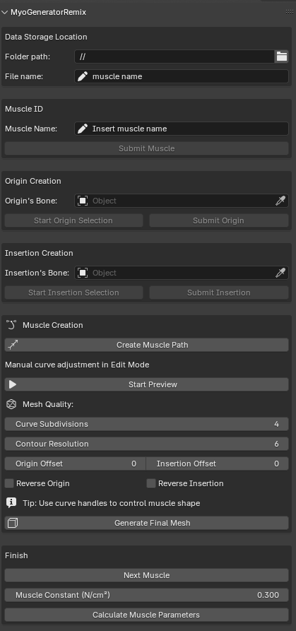

Paleontología Virtual
Día 5: Reconstrucción Muscular y Biomasa
E. Miguel Díaz de León Muñoz
2026-04-22
Introducción a la Reconstrucción Muscular
¿Por qué reconstruir músculos?
- Los huesos solo cuentan una parte de la historia.
- La musculatura define la función biológica:
- Locomoción.
- Alimentación (fuerza de mordida).
- Postura.
- Es el puente necesario para simulaciones de:
- FEA: Para aplicar cargas realistas.
- Multibody Dynamics: Para simular movimiento.

El Primer Paso: Retrodeformación
Restauración antes del modelado
- Los fósiles suelen estar deformados (tafonomía).
- Antes de “poner músculos”, debemos restaurar el hueso a su estado in vivo.
- Técnicas en Blender (Herbst et al. 2022; DeVries et al. 2022):
- Mirroring: Reflejar partes simétricas.
- Armatures (Rigging): Para re-posicionar fragmentos.
- Remeshing: Crear mallas base limpias y “watertight”.
- Sculpt mode: Reparar grietas y erosión superficial.

MyoGenerator y su sucesor
Un enfoque interactivo y moderno
- Original (Herbst et al. 2022): Revolucionó el modelado 3D de músculos (reducción de 15h a 2h).
- MyoGeneratorRemix: Una evolución desarrollada para solucionar el abandono del código original y modernizar el flujo de trabajo.
- Compatibilidad: Optimizado para Blender 4.2.0 - 4.4.x (soporte total para versiones modernas).
- Ventajas del Remix:
- Estabilidad de malla mejorada.
- Cálculos biomecánicos autorregenerables.
- Integración nativa de métricas de fuerza.

MyoGeneratorRemix: Innovaciones Técnicas
Estabilidad y Robustez Geométrica
- Parallel Transport Frames (Bishop Frames):
- Soluciona el problema de “torcedura” (twisting) de las mallas en curvas complejas.
- Asegura que la orientación de la sección transversal sea consistente matemáticamente.
- Lofting Dinámico:
- La malla se actualiza en tiempo real mientras se edita la curva Bezier o los manejadores.
- Shaders Procedurales:
- Generación automática de materiales realistas (apariencia de tejido muscular y tendones) mediante Geometry Nodes.

MyoGeneratorRemix: Ventajas Biomecánicas
Precisión en la Toma de Datos
- Automatización de Métricas:
- Exportación de Volumen, Longitud de Fibra real y PCSA en un solo paso.
- Integración de Fuerza (\(F_m\)):
- Aplica automáticamente el valor de estrés isométrico (\(0.3\,N/mm^2\)) en la exportación CSV.
- Formatos de Análisis:
- CSV optimizado para lectura directa en herramientas de FEA (como BFEX) o Dinámica Multicuerpo.
Prerrequisitos (Entorno Remix)
Antes de ejecutar el add-on:
- Blender 4.2+: Asegurar que estás en una versión moderna para soporte de Python 3.11+.
- Limpieza de Malla: Huesos deben ser “manifold” y preferiblemente con topología uniforme.
- Escala y Rotación: ¡Crítico!
Ctrl+A> All Transforms. - Normales: Orientadas correctamente hacia fuera.
- Colecciones: Mantener una estructura limpia (el add-on creará su propia colección de resultados).
Conceptos Biomecánicos Clave
Métricas que extraemos de los modelos:
- Volumen Muscular (\(V_m\)): Calculado directamente desde la malla 3D.
- PCSA (Physiological Cross-Sectional Area):
- El área transversal que realmente genera fuerza.
- Fórmula: \(PCSA = \frac{V_m \cdot \cos(\theta)}{L_f}\)
- Supuesto de Simplicidad: Para modelos en los que no se conoce la arquitectura interna, se asume un músculo de fibras paralelas (\(\theta = 0^\circ\)) y que la longitud de la fibra es igual a la longitud muscular (\(L_f = L_m\)), simplificando a \(PCSA = \frac{V_m}{L_m}\).
- Líneas de Acción: La trayectoria del vector de fuerza.
- Brazo de Momento: Eficiencia de la palanca muscular según su inserción.
Estimación de Fuerza y Sensibilidad
Del modelo a la fuerza mecánica
- Cálculo de Fuerza (\(F_m\)): Multiplicamos el PCSA por un valor de estrés muscular isométrico.
- Se utiliza un valor estándar de 0.3 N/mm² (Thomason 1991; Wroe, McHenry, y Thomason 2005).
- Análisis de Sensibilidad:
- Al mantener constantes el ángulo de penación (\(\theta\)) y la relación \(L_f/L_m\), podemos aislar e investigar el efecto de:
- Volúmenes 3D complejos.
- Trayectorias de longitud curvas vs. rectas.
- Al mantener constantes el ángulo de penación (\(\theta\)) y la relación \(L_f/L_m\), podemos aislar e investigar el efecto de:
- Resultado Clave: Variar estos parámetros cambiaría la fuerza absoluta, pero no la diferencia relativa entre los métodos de reconstrucción testeados (Herbst et al. 2022).
Flujo de Trabajo: MyoGenerator (I)
1. Definición de áreas de anclaje (attachment areas)
- El add-on entra automáticamente en Edit Mode.
- Selección de Caras: Se seleccionan las caras del hueso donde se ancla el músculo.
- Se recomienda usar la herramienta Lasso Select.
- El área debe ser continua (sin huecos).
- Al enviar: MyoGenerator crea:
- Un objeto
[Nombre] origin/insertioncon las caras duplicadas. - Un objeto
[Nombre] boundary loopcon el contorno de la inserción. - Los organiza bajo un Empty para mantener jerarquía.
Flujo de Trabajo: MyoGenerator (II)
2. Generación de la Trayectoria
- Se crea una NURBS Curve entre los centroides de origen e inserción.
- Perfil (Bevel): El add-on proyecta el loop de origen al plano XY para usarlo como sección transversal.
- Ajustes manuales necesarios:
- Mirroring: A veces es necesario reflejar la sección transversal si la proyección se invirtió.
- Tilt: Ajustar la torsión para alinear el perfil con el hueso.
- Bevel Extent: Escalar para que el final de la curva coincida con la inserción.
- Regla: Se pueden mover los puntos intermedios (5 totales), pero nunca los extremos.
Flujo de Trabajo: MyoGenerator (III)
3. Finalización
- Join Muscle: El add-on une el volumen de la curva con los loops de origen/inserción, realiza un “bridge” de aristas y cierra los extremos.
- Ajuste de Secciones: Al estar basado en edge loops, se puede usar Proportional Editing para ensanchar el vientre muscular.
- Manejo de Inserciones Planas:
- Si el músculo es muy paralelo al hueso y no se alinea bien, se ensancha el final hasta que interseca el hueso.
- Se aplica un modificador Boolean Difference (manual) para recortar el sobrante contra el hueso.
- Limpieza: Eliminar T-junctions y recalcular normales.
Caso de Estudio: Erlikosaurus andrewsi
Validación del método (Herbst et al. 2022; Lautenschlager 2015)
- Reconstrucción de la musculatura mandibular de este terizinosaurio.
- Comparativa:
- MyoGenerator vs Segmentación manual de CT.
- MyoGenerator vs Modelos de cilindros (Frustums).
- Resultado: MyoGenerator produjo volúmenes comparables a la segmentación de CT pero en una fracción del tiempo.
- Demostró mayor realismo que los cilindros simples al considerar la curvatura anatómica.

Integración con el Análisis Biomecánico
Del modelo a los datos
- Exportación CSV: MyoGenerator exporta automáticamente:
- Áreas de Origen/Inserción (\(mm^2\)).
- Centroides de Origen/Inserción.
- Linear Length: Distancia euclidiana entre centroides.
- Muscle Length: Longitud real de la trayectoria curva.
- Volumen Muscular (\(mm^3\)).
- Uso posterior:
- BFEX: Exportar estas regiones a Fossils para análisis FEA (Díaz de León-Muñoz, Boman, y Ferreira 2025).
- OpenSim: Datos de entrada para dinámica multicuerpo.
Estimación de Biomasa
De los músculos al animal completo
- El volumen muscular nos da el PCSA, y por tanto la fuerza máxima.
- A partir del volumen de los principales grupos musculares y su densidad estimamos la masa muscular.
- Contexto: No confundir con la biomasa total del organismo (que usa convex hulls o lofting del esqueleto completo), sino que nos enfocamos en el componente motor del animal.
Práctica Guiada
En esta sesión:
- Instalaremos el add-on MyoGeneratorRemix.
- Pintaremos orígenes e inserciones en un cráneo.
- Generaremos el volumen de los músculos aductores.
- Exportaremos los datos biomecánicos a CSV.
Enlaces de utilidad
Bibliografía
DeVries, Raina P., Paul C. Sereno, Daniel Vidal, y Stephanie L. Baumgart. 2022. «Reproducible Digital Restoration of Fossils Using Blender». Frontiers in Earth Science 10 (February): 1-13. https://doi.org/10.3389/feart.2022.833379.
Díaz de León-Muñoz, E. Miguel, Romain Boman, y Gabriel S. Ferreira. 2025. «BFEX: A Toolbox for Finite Element Analysis With Fossils and Blender». Ecology and Evolution 15 (3): e71093. https://doi.org/10.1002/ece3.71093.
Herbst, Eva C., Luke E. Meade, Stephan Lautenschlager, Niccolo Fioritti, y Torsten M. Scheyer. 2022. «A Toolbox for the Retrodeformation and Muscle Reconstruction of Fossil Specimens in Blender». Royal Society Open Science 9 (8): 1-18. https://doi.org/10.1098/rsos.220519.
Lautenschlager, Stephan. 2015. «Estimating Cranial Musculoskeletal Constraints in Theropod Dinosaurs». Royal Society Open Science 2 (11). https://doi.org/10.1098/rsos.150495.
Thomason, J. J. 1991. «Cranial Mechanics of the Marsupial Didelphis Virginiana and the Arthropod-like Biting of Some Extinct Groups». Biological Journal of the Linnean Society 43 (2): 141-63. https://doi.org/10.1111/j.1095-8312.1991.tb00588.x.
Wroe, S., C. McHenry, y J. Thomason. 2005. «Bite Club: Comparative Bite Force in Big Cats Past and Present». Proceedings of the Royal Society B: Biological Sciences 272 (1563): 619-25. https://doi.org/10.1098/rspb.2004.2986.

E. Miguel Díaz de León Muñoz · Museo Virtual Nacional